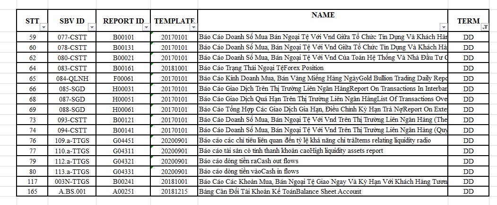
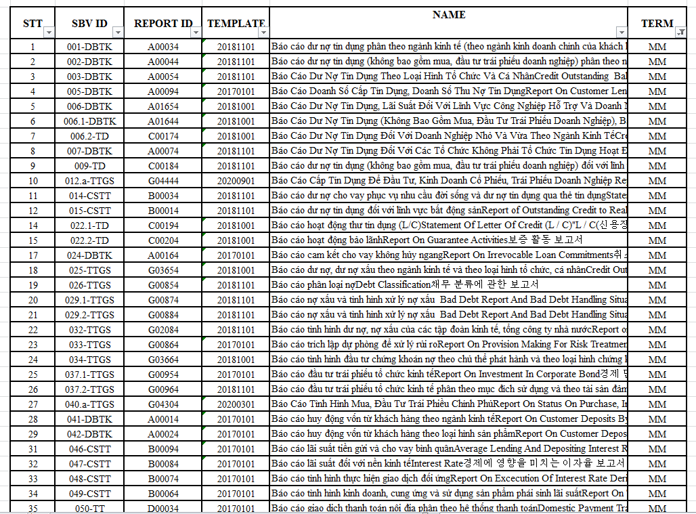
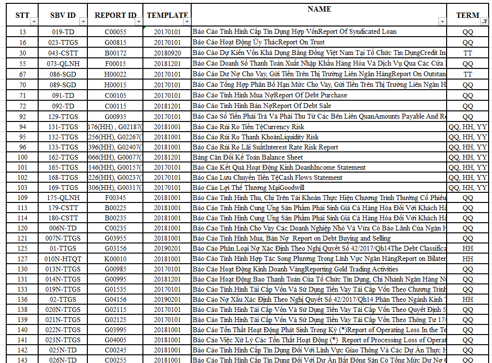
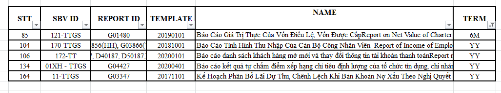
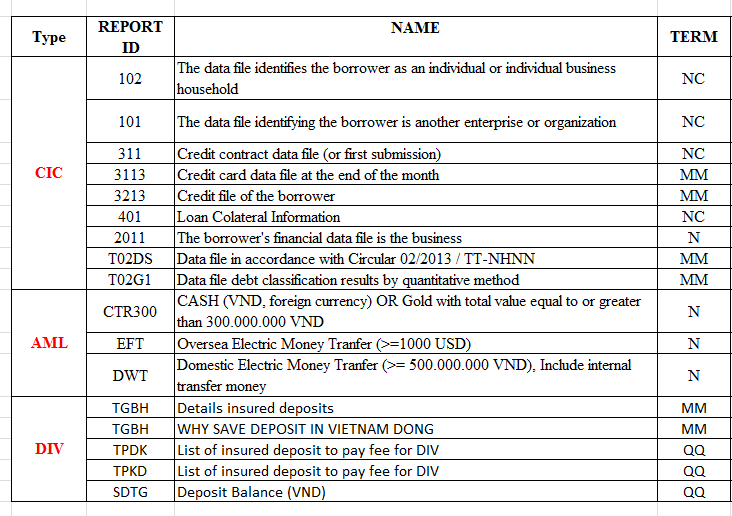
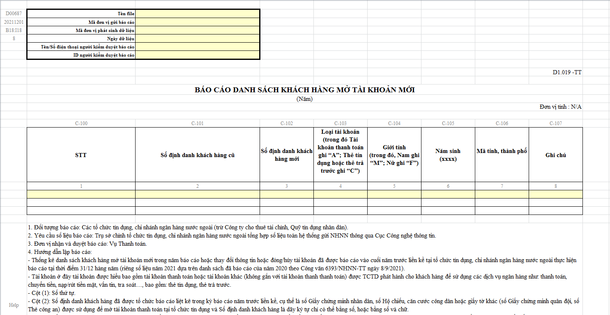
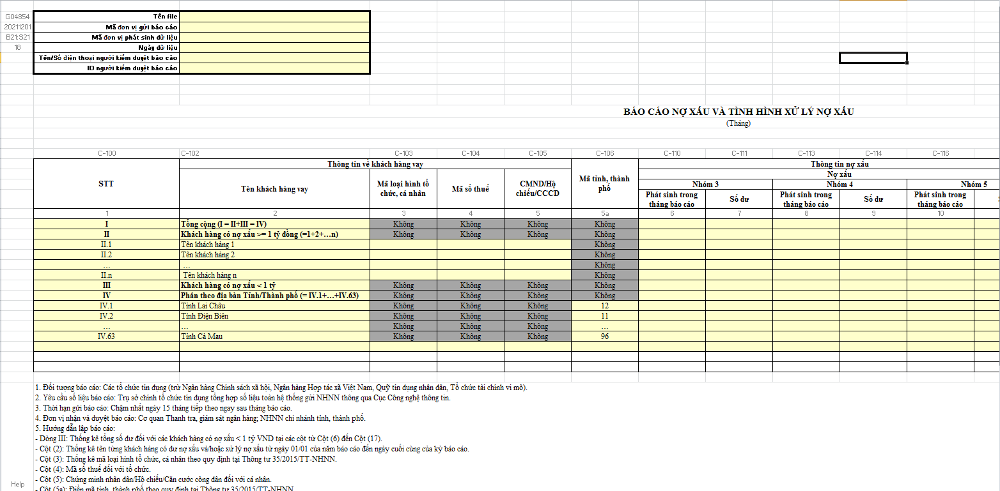
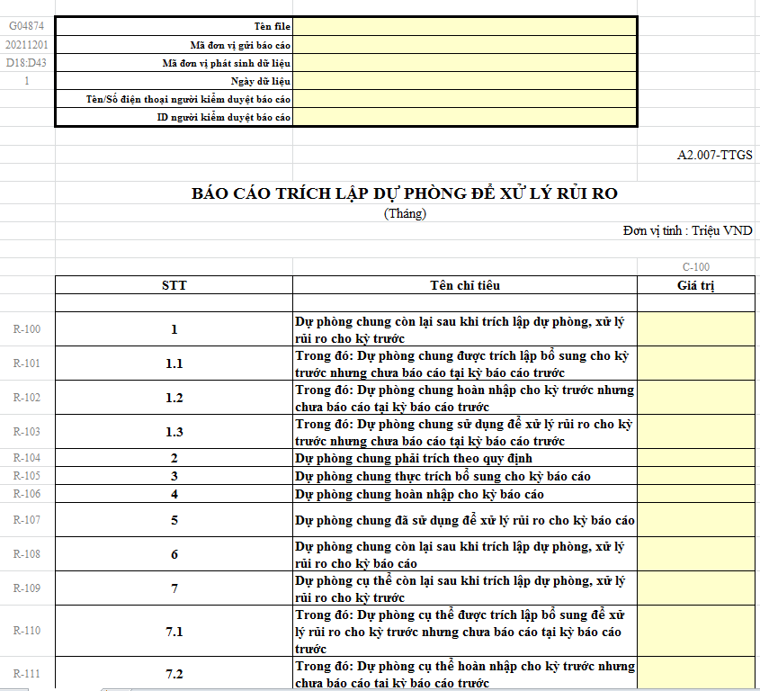
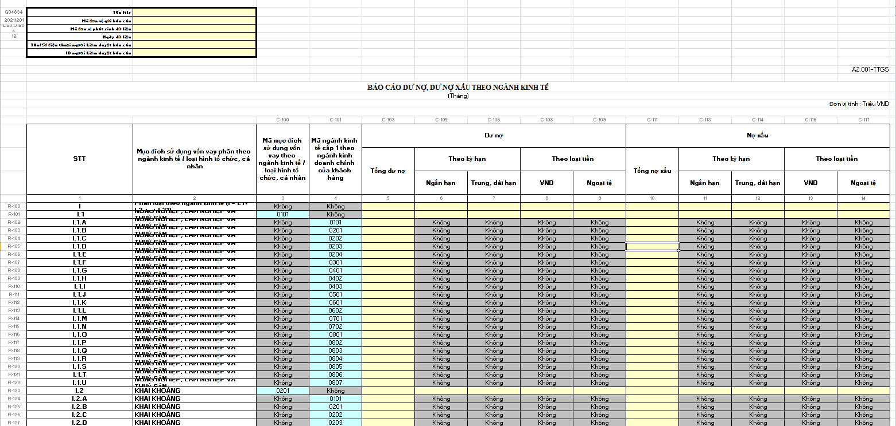
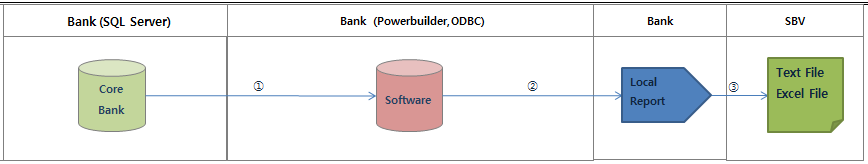

1.List of reports and some report forms provided by SBV
Project information
- Technologies: Powerbuilder 12.5, SQL Server,PostgreSQL,XML
- Tools: Excel,freeFTP, VMware, SOAP (TEST)
- Category: Report
- Team Size: 4
Summary
1. Local Report
I have worked with many clients who are foreign credit institutions with branches in Vietnam.My job is to develop statistical reports, Bank Local Reports, AML(Anti Money Laundering) reports, DIV(Deposit Insurance of Vietnam), CIC(Credit Information Center) reports..... This report is to be analyzed data and move to the software to use the request of the State Bank of Vietnam.
Workflow
2. Online Information Provides System
- Summary : Provide real-time information for SBV process and respond in 180 s with the closest EOD data the Bank can provide
Target process
- Step 01: Receive message from SBV request (XML format)
- Step 02: Save request information and create a file containing request information (text file)
- Step 03: Automatically send query information to Server
- Step 04: The dedicated program will process the request and return the requested information SBV
- Step 05: The requested data is saved in text form and uploaded to the server of the dedicated software
- Step 06: Special software that processes the result of the SBV's message request and returns the result to SBV in the form of an XML document